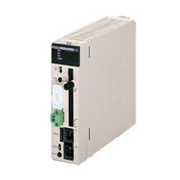
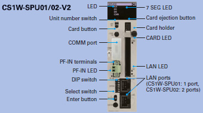
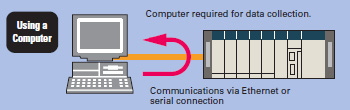
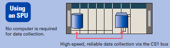
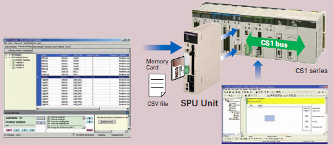
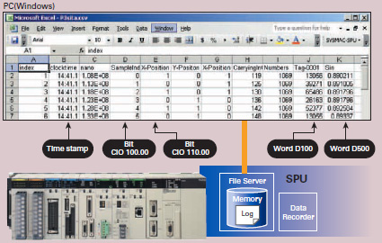

PLC data is collected in a PLC Unit with superior environmental resistance without using a computer.
Until now, data has been collected in PLC memory.
Using an SPU Unit, however, eliminates the need for a PLC with a large-capacity memory and also eliminates the need for programming data collection in the ladder program.
Building Automation
Industrial Automation
Power Automation & Safety


Bangladesh Distributor
CS1W-SPU01-V2 / SPU02-V2
CS-series High-speed Data Storage Unit (SPU Unit)

High-speed Collection of System Data
about this Product Family
Related Contents
- Automation Systems
- Programmable Controllers
- Features
- Lineup
- Specifications
- Dimensions
- Catalog
last update: September 17, 2013
The SPU Unit reads PLC I/O memory according to specified collection methods and stores the data in CSV (Comma Separated Value) files with time stamps. The SPU Unit can record a variety of data from equipment using a PLC.
Data Collection Using a PLC Unit

Fast Collection of Large Amounts of Data with Data Concurrency
Using a computer for data collection presents the problems of a slow collection speed and low collection point capacity. An SPU Unit enables high-speed collection of large amounts of data*.
Direct use of the PLC bus instead of communications via a serial connection or LAN enables large amounts of data to be collected at a high speed.
Some data collection devices from other companies may not provide data concurrency. The SPU Unit, however, provides concurrency of simultaneous data.


* The maximum total size of all variables is 7,776 words. For details, refer to "CS1W-SPU01/SPU02-V2, CJ1W-SPU01-V2
SPU Units Operation Manual"(Cat. No. V236).
SPU Units Operation Manual"(Cat. No. V236).
Use the SPU Unit to record data such as production history data, inspection data, and process data. Electronically managing data on the operation of equipment and devices enables root cause analysis when errors occur, as well as a proper understanding of operational tendencies.
No Ladder Programing
No ladder programming is required for data collection. Data can be collected simply by performing the settings from the setting software (i.e., SPU-Console).
No need to leave extra space in the PLC memory for saving data.
Note: The PLC cycle time increases in proportion to the number of points collected.

Restriction-free Data Configuration Files without Depending on PLC Memory Space
Files can be created with the desired data configuration for only the necessary data from PLC memory.
The data to be collected can be stored in files in the required data type, such as BOOL, REAL, INT, BCD, or STRING.
Data configuration files required for the host computer can be created, so necessary data can be retrieved even if the SPU is mounted in a device after the PLC is already set up.
CHANNEL_BLOCK has been added to the variable data types from SPU Unit version 2.0. When the data type is set to CHANNEL_BLOCK, the data in a consecutive memory area starting from the specified address for the specified number of elements is handled as a single data item with no commas.

Windows is a registered trademark of Microsoft Corporation in the United States and other countries.
Microsoft product screen shots reprinted with permission from Microsoft Corporation.
Other company names and product names in this document are the trademarks or registered trademarks of their respective companies.
Data Management Middleware for the SYSMC SPU
The Data Management Middleware for the SPU Unit is Windows-based software for transferring data files collected by the SPU Unit to the computer and managing the files.
The CSV files can be transferred to a computer by setting only the CSV files the user wants to transfer. It is not necessary to install or set up FTP server software on the computer.
The data collected by the SPU Unit is automatically stored in an untitled table as a database. It isn't necessary to create a program to store data to the database, reducing the cost of system development. (This is a new version-2 function.)
The user can select a name and folder when copying the data files to the computer. Files can be copied with easily distinguished names, for example, by adding the collection date and time to a chosen character string such as “Device1.”
The SPU Unit will continue recording data even if the computer is turned OFF because of a network interruption or other cause.
Copying can be resumed from a data file if it is not already transferred. Data collection systems can therefore be established with strong resistance against system disturbances.
The SPU Unit time and CPU Unit time can be periodically set to the computer time automatically.
last update: September 17, 2013